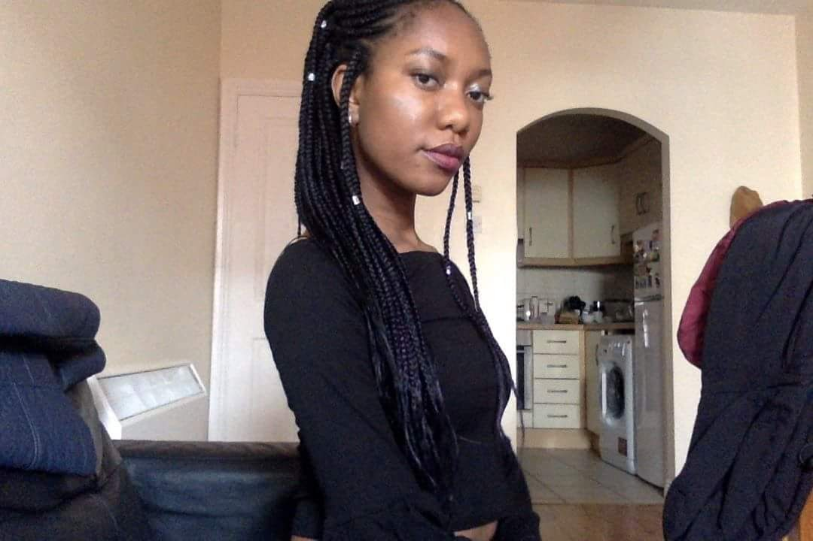

Braids
Life isn't perfect but your hair can be! -Anonymous
Background
Box braids are a braiding style often achieved with synthetic hair extensions.
The name comes from the fact that there is usually a "box" or square-shaped partings for each braid, although parting variations aren't uncommon.
Equipment
- 1 Rat-tail comb
- 1 hairbrush
- expression hair extensions
- Hair gel(optional)
- Toothbrush(optional)
- elastic bands(optional)
- hair beads(optional)
- Silk/Satin pillowcase or headscarf(for protection while you sleep)
- Time & Patience
Method
- Start off with clean dry hair.I highly recommend that you wash and deep condition your hair the night before you plan to braid your hair.
- Take out the expression hair extensions and stretch it out so as to make braiding easier
- Now grap a rat-tail comb and divide your hair into as many sections as you please.The amount of sections that you have will effect how many braids will be on your head.The smaller the sections the more plentiful the braids will be and vice versa.If you wish to you can secure each section with an elastic band so as to make braiding easier
- Take a section of the hair that you previously parted and attatch a piece of expession extension to it.Divide the expression into 3 parts and starts braiding it with your natural hair.Stop braiding when you've reached the end
- Continue step 4 until the bottom sections of your hair are now braided.
- Using the remaining expression extension cornrow the hair at the top of your hair.If you like you can add some hair beads to beautify your look.
- If you want you can slick down your babyhairs with a soft toothbrush and some styling gel.All you have to do is to apply gel to your edges and brush them in a swirling motion with a tooth brush.This creates a cute swrirls of hair around your hairline instead of a bushy mess!If all your baby hairs were braided then that's fine too
- When taking your braids out be careful to take your time so as to not cause any breakage.
- It's reccomended to keep braids in for a maximum of 2 months because keeping them in any longer than that can cause some serious damage to the hair
